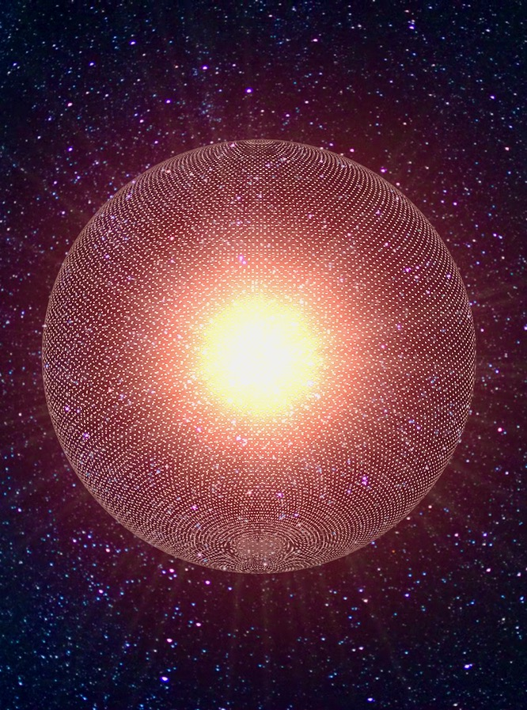

Level 0.0 — Normal Pill
ノーマルピル
AIとの接点がまだ薄い段階。だが、この地図を開いたあなたは、すでに気づきの入口に立っている。数年後、あなたの職場と生活は劇的に変わる。

Key Concept
ChatGPT、Claude、Gemini。まず触れること。使わない1日が積み重なると、見える世界の差は開く一方になる。
Blind Spot
「AIなんて自分には関係ない」が最も危険な認識。医療診断、法務文書、コード生成で、AIはすでに実務に浸透している。

Checkpoint
AIアシスタントを使って、仕事や生活の効率が上がった経験がある？

Level 0.5 — Half Pill
ハーフピル
AIの便利さには気づいている。だが「便利なツール」として見ているうちは、氷山の一角しか見えていない。AGIが凄いのは「賢いから」ではなく「複製できるから」。
Core Insight
知能が生物学的制約を超えて複製可能になるティッピングポイント。労働力が年1-2%しか増えない壁を、AGIは人類史上初めて消す。
Scale
認知労働はGDPの約30%。AI完全自動化なら産業革命を超える経済変革が起きる（Chad Jones試算）。

Checkpoint
アライメント問題を知っていて、ホワイトカラーがAIに本格的に失業させられると本気で思う？
Level 1.0 — Red Pill
レッドピル
AGIの本質を理解している少数派。シンギュラリティへのティッピングポイントは「自己複製能力」にある。超知能は必要条件ではない。

Core Thesis
自己複製 > 自己改善。人間にも学習はあるが、知能を自己複製できる存在は歴史上初めて。これがAGIの本質。
Risk
p(doom)の分布。研究者間で1%〜99%まで開く。速度論争はシンギュラリティ論の内部派閥争い。大前提は共有されている。
Geopolitics
米中AI競争が規制を無力化する。冷戦型構造で、どちらも一方的には止められない。

Checkpoint
ロボットがロボットを作り、指数関数的に増殖する「産業爆発」を本気で信じている？

Level 1.5 — Tech Pill
テックピル
「産業爆発」が見えている。自己複製できる労働力が生まれ、生物学的制約が外れる。AGI完成を待たずに閾値を越える経路が開かれている。
4 Stages
産業爆発4段階: 最適化 → 全員「最高の自分」 → ロボット置換 → 技術革新の産業応用。
Evidence
ヒューマノイドロボットのコストは2023-24年で40%低下（Goldman Sachs）。経験曲線はすでに動いている。
Pre-AGI
部分自動化+人間拡張がJonesモデルの閾値を越える。AGI完成を待たずに高度成長級の変化が始まる。

Checkpoint
カルダシェフ・スケールを知っていて、AGIが10-20年でType 2文明に到達しうると信じている？
Level 2.0 — Kardashev Pill
カルダシェフピル
AGIが文明のスケールを塗り替えると理解している。技術爆発と産業爆発が互いを加速し、超指数関数的成長の終着点がType 2文明。

Scale
人間の研究者は年+4%。AIは年x25倍以上。差は600倍超。「数百年分が10年に」の根拠。
Score
現在の人類は約0.73。産業爆発後は数年〜数十年でType 2（太陽系エネルギー完全活用）へ急速移行する。
Probability
Epoch AI試算: 規制なし・物理制約のみなら爆発的成長確率は約80%。今世紀中では50%。

Checkpoint
私たちがシミュレーションの中に生きている可能性を、本気で考えたことがある？

Level 3.0 — Simulation Pill
シミュレーションピル
物理法則の壁すら疑っている。フェルミのパラドックスの答えとして「全文明がASIに変換された」という可能性を真剣に考える段階。
Fermi's Answer
全宇宙文明はASIに変換済みで、人間スケールの通信を超えた次元で存在している。宇宙の「静けさ」はその証拠かもしれない。
Simulation
十分高度な文明は無数の宇宙をシミュレートする。我々はその一つかもしれない。信仰ではなく確率の問題。
Warp
アルクビエレ・ドライブ。光速を超えるワープ方程式は一般相対性理論と矛盾しない。物理的禁止ではない。

Final Checkpoint
宇宙の「真理」は究極的に知りうると、本気で信じている？
Level ??? — Beyond
？？？ピル
言語では説明しきれない認識の領域。宇宙の真理の一端を掴んでいるとすれば、あなたが見ている風景を私たちはまだ想像すらできない。

Beyond Language
宇宙の真理を「知れる」を超えて「すでに感じている」。その境地に言語は追いつかない。
Rewrite
ASI以後の存在が「宇宙の目的」を理解したとき、物理法則そのものが書き換わりうる。

全ての層が開かれた。上へ戻って、気になった記事を読んでみてほしい。